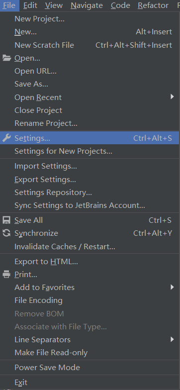
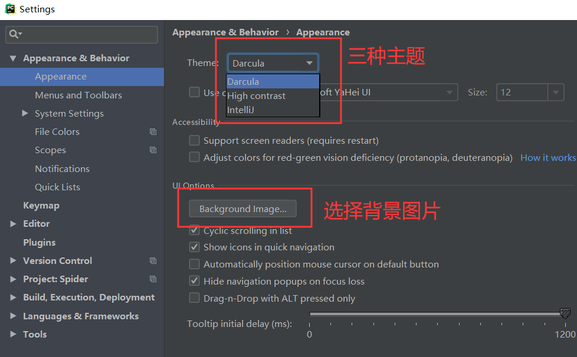
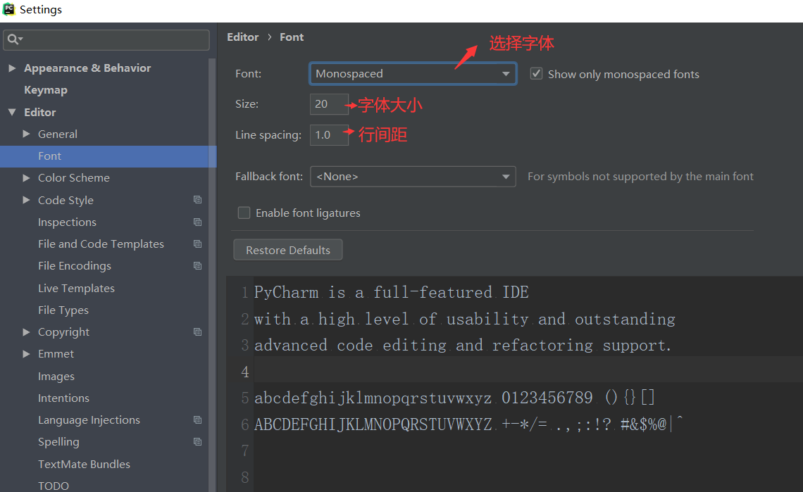
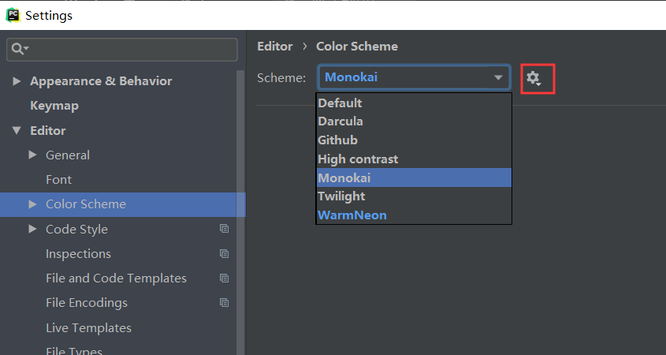
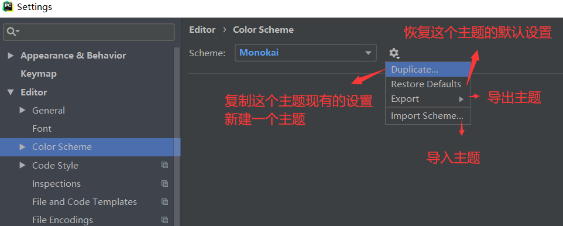
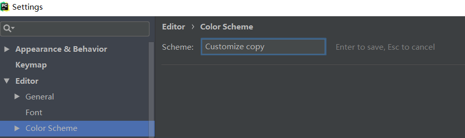
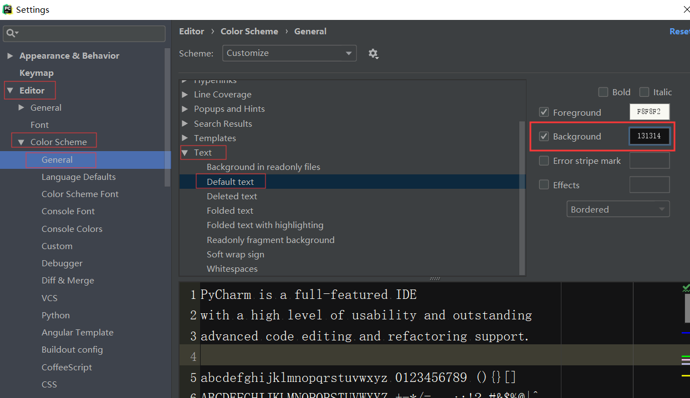
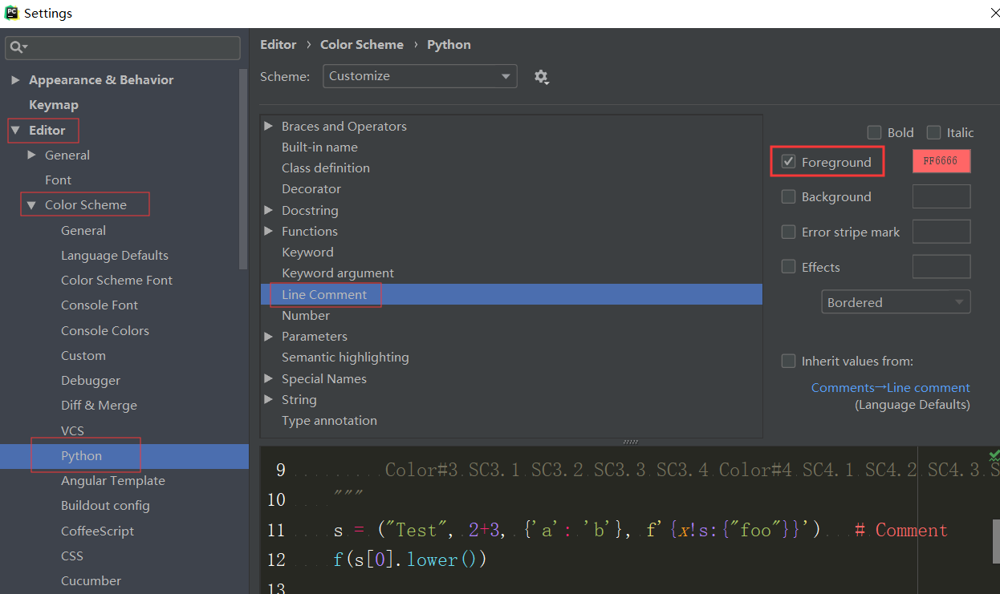

File --> Setting (Ctrl + Shift + S)

1、选择不同的主题、选择背景图片 Appearnce & Behavior --> Appearance

2、字体 Editor --> Font

3、建立属于自己的颜色主题 Editor --> Color Scheme
自带几种颜色主题，选择一个自己比较中意的，然后点击旁边的齿轮
也可以就在它里面修改一些颜色，颜色不一样的主题，代表自己进行过一些更改的主题，不满意的时候，可以恢复默认设置

选择Duplicate，建立属于自己的主题，如果自己各方面调的很满意，可以导出自己的主题保存，换新装备时，直接导入使用就可以了


4、修改背景颜色 Editor --> Color Scheme --> General --> Text --> Default text

5、修改注释颜色 Editor --> Color Scheme --> Python -->Line Comment
这里面还能设置其它代码的颜色（变量名、方法名、符号...），根据自己的喜好自行设置
